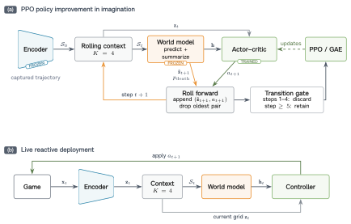
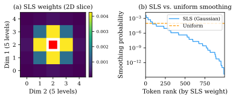

Discrete World Models tokenize observations with a learned quantizer and predict next-frame tokens with a transformer, but standard cross-entropy treats every incorrect prediction as equally wrong. SLS replaces this hard target with a tokenizer-metric-aware soft target, so nearby alternatives receive more credit than unrelated tokens.
The current method is annealed Structured Label Smoothing: structured smoothing is used early to reduce brittle optimization, then the smoothing mass is annealed to zero so the late objective is ordinary CE. FSQ provides a natural integer-lattice distance; VQ-style tokenizers can use codebook or embedding distance.
Geometry Dash V7 remains the application showcase. The FSQ-VAE tokenizes Sobel edge maps, a causal transformer predicts next-frame tokens, and a CNN actor-critic on the predicted token grid drives the agent. The controller is trained entirely in imagination on dreamed rollouts and deployed at 30 FPS on the real game via screen capture.
TL;DR. SLS is now framed as an annealed, tokenizer-metric-aware CE replacement. FSQ lattice smoothing is the Geometry Dash special case; IRIS/Pong is the first accepted-baseline CE vs. SLS benchmark.

One-hot cross-entropy ignores token geometry entirely. SLS replaces the one-hot training target with a kernel over a tokenizer-defined distance, so nearby alternatives receive most of the smoothing mass and distant tokens receive negligible weight. For FSQ, the distance is the lattice distance between coordinates $\mathbf{c}(i)$ and $\mathbf{c}(j)$; for VQ-style tokenizers it can be codebook or embedding distance.
$$q_t(j \mid i) \;\propto\; \varepsilon_t\, k\!\left(d(i,j)\right), \qquad k(d) = e^{-d^{2}/2\sigma^{2}}.$$
Annealed SLS schedules $\varepsilon_t$ from structured smoothing early in training to zero late in training. This keeps the stabilizing near-miss signal while making the final objective exactly ordinary CE. Fixed SLS is retained as an ablation because it isolates the stability effect but can over-regularize the asymptotic solution.
